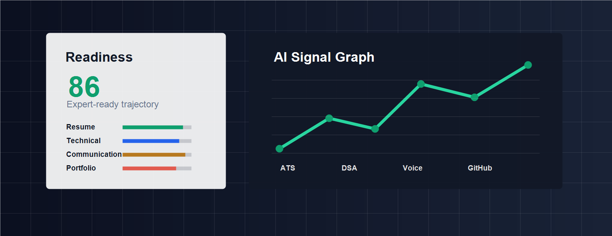

Resume
ATS terms, measurable achievements, clarity, grammar, and formatting consistency.
Analyze resume strength, technical basics, communication clarity, and portfolio credibility in one focused dashboard built for students preparing for placements.

ATS terms, measurable achievements, clarity, grammar, and formatting consistency.
Rapid fundamentals across data structures, algorithms, OOP, and SQL readiness.
Concise self-introduction, structure, confidence signals, and filler-word control.
GitHub or LinkedIn proof: repo quality, descriptions, commits, demos, and diversity.